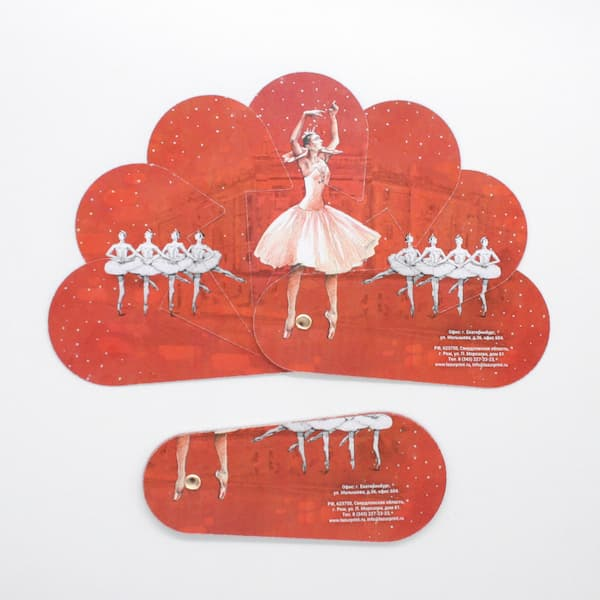

Дорогие друзья! Мы рады представить вам новинку в нашей коллекции сувенирной продукции — изысканный веер с изображением величественного Екатеринбургского театра оперы и балета. Этот уникальный аксессуар станет не только практичным подарком, но и прекрасным способом сохранить воспоминания о визите в культурную столицу Урала.
Дизайн веера разработан с особым вниманием к деталям. На нем запечатлен один из самых красивых архитектурных памятников города — театр оперы и балета, который является настоящим символом культурного наследия Екатеринбурга.
Качество исполнения находится на высочайшем уровне. Мы использовали современные полиграфические технологии, которые позволили передать все тонкости архитектурного облика здания и создать яркое, насыщенное изображение.
Веер станет прекрасным подарком для:
Не упустите возможность приобрести этот изысканный сувенир, который будет напоминать о прекрасных моментах, проведенных в Екатеринбурге. Спешите заказать новинку прямо сейчас!
Для заказа веера и других сувениров от типографии «Лазурь» посетите наш сайт или свяжитесь с менеджерами по указанным контактам.
Позвоните по телефону 8 (800) 707-95-40 или напишите на email info@lazurprint.ru